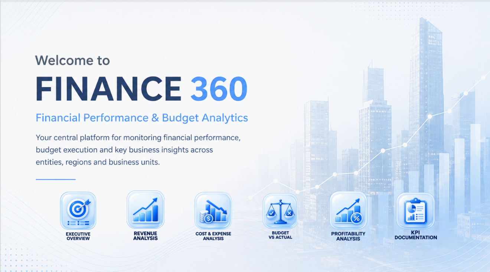

Power BI · Financial Analytics · Budgeting
FINANCE 360
Financial Performance & Budget Analytics — a Power BI solution designed to monitor revenue, costs, profitability and budget variances across entities, regions and business units.

Context & objective
Finance 360 was built as a complete financial case study designed to provide a consolidated view of financial performance. The report compares actual and budget data to quickly identify variances, key cost drivers, the most profitable business units and margin trends.
Business need
Provide management with a clear view of revenue, costs, margins, operating profit, net profit and budget execution, with analysis by month, entity, region and business unit.
BI solution
Power BI model structured around financial and budget facts, shared dimensions, Power Query transformations, DAX measures and decision-oriented visualizations with favorable / unfavorable variance analysis.
Key metrics
Report pages